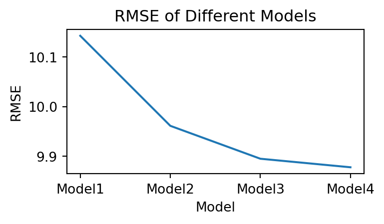

import warningswarnings.filterwarnings('ignore')import pandas as pdimport seaborn as snsimport matplotlib.pyplot as pltfrom mizani.formatters import percent_formatimport osfrom plotnine import*import numpy as npimport sysimport numpy as npimport statsmodels.api as smimport statsmodels.formula.api as smffrom stargazer import stargazerfrom statsmodels.tools.eval_measures import mse,rmsedf = pd.read_csv("https://raw.githubusercontent.com/Jk33033/Data_Analysis3/main/assignment1/morg-2014-emp.csv")data = df.loc[((df["occ2012"] >=4300) & (df["occ2012"] <=4650))]data["w"] = data["earnwke"] / data["uhours"] #wage is earning a week divided by usual working hoursdata["agesq"] = np.power(data["age"], 2)data["grade92sq"] = np.power(data["grade92"], 2)data["female"] = (data["sex"] ==2) # make dummy variables regarding gender
Introduction
In this report, four predictive models are built with linear regression for earnings per hour, especially for Personal Care and Service Occupations. The four models are compared in three different ways; (1) RMSE in the full sample, (2) crossvalidated RMSE and (3) BIC in the full sample. The result is that RMSE in the full sample monotonically decreased, while crossvalidated RMSE and BIC in the full sample showed a U curve by comlexitiy.
Making Models
4 models are made with following variables.
model1: This is the simple model with the assumption that age is the most effective element for earnings. \[Earnings = \beta_0 + \beta_1 Age + \beta_2 (Age)^2\]
model2: As well as age, grade can be the next powerful variables. \[Earnings = \beta_0 + \beta_1 Age + \beta_2 (Age)^2 + \beta_3 Grade + \beta_4 (Grade)^2\]
model3: Gender is also important, so it should be added to model3 \[Earnings = \beta_0 + \beta_1 Age + \beta_2 (Age)^2 + \beta_3 Grade + \beta_4 (Grade)^2 + \beta_5 Female\]
model4: This is the most complex model of 4 models, including any variables such as the length of working, the number of children, and others times age. \[Earnings = \beta_0 + \beta_1 Age + \beta_2 (Age)^2 + \beta_3 Grade + \beta_4 (Grade)^2 + \beta_5 Female\]\[ + \beta_6 Working Hours + \beta_7 Children + \beta_8 (Grade)(Age) + \beta_9 (Female)(Age)\]\[ + \beta_10 (Working Hours)(Age) + \beta_11 (Children)(Age)\]
(1)Comparing 4 models in RMSE in the full sample
According to the figure below, complexity makes less rmse.
Code
# make a function the calculate RMSEdef calc_rmse(formula, data, robustse=None):if robustse isNone: model = smf.ols(formula, data=data).fit()else: model = smf.ols(formula, data=data).fit(cov_type=robustse) rmse_value = rmse(data[formula.split("~")[0]], model.predict(data))return rmse_valuemodel1 ="w~ age + agesq"model2 ="w~ age + agesq + grade92 + grade92sq"model3 ="w~ age + agesq + grade92 + grade92sq + female"model4 ="w~ age + agesq + grade92 + grade92sq + female + uhours + ownchild + grade92* age + female*age + uhours*age + ownchild*age "formulas = [model1, model2, model3, model4]# make a figure of each RMSE using all samples in 4 modelsrmse_results = pd.DataFrame(columns=['Model1', 'Model2', 'Model3', 'Model4'])rmse_values = []for formula in formulas: rmse_value = calc_rmse(formula, data, "HC0") rmse_values.append(rmse_value)# add the result of calculation to the figurermse_results.loc[0] = rmse_values# show resultprint(rmse_results)
#plot with pdmodels = ['Model1', 'Model2', 'Model3', 'Model4']plt.figure(figsize=(4, 2))plt.plot(models, rmse_values)plt.xlabel('Model')plt.ylabel('RMSE')plt.title('RMSE of Different Models')plt.show()

(2)Comparing 4 models in liner regression with k-fold cross validation
This is the direct approach to find the best model. In k-fold cross validation, sample is randomly divided into test set and train set. This time, k is defined as 4. Model 3 shows the lowest figure, which means model3 can be the best for prediction without overfitting.
Code
from sklearn.model_selection import KFold# define k as 4k = KFold(n_splits=4, shuffle=False, random_state=None)# make a function of cross validate OLS with combining sklearn k-fold cross validation and statsmodels ols formuladef cv_reg(formula, data, kfold, robustse=None): rmse_list = []# Calculating OLS for each foldfor train_index, test_index in k.split(data):# make a train dataset and test dataset from the original sample data_train, data_test = data.iloc[train_index, :], data.iloc[test_index, :]if robustse isNone: model = smf.ols(formula, data=data_train).fit()else: model = smf.ols(formula, data=data_train).fit(cov_type=robustse) rmse_list += [rmse(data_test[formula.split("~")[0]], model.predict(data_test))]return {"rmse": rmse_list, }def summarize_cv(cvlist, stat="rmse"):# make a figure that illustrate RMSE in each model result = pd.DataFrame( {"Model"+str(x +1): cvlist[x][stat] for x inrange(len(cv_list))} ) result["Resample"] = ["Fold"+str(x +1) for x inrange(len(cvlist[0]["rmse"]))] result = result.set_index("Resample") result = pd.concat([result, pd.DataFrame(result.mean(), columns=["Average"]).T])return result# make list of cross validation of 4 models to calculate RMSEcv1 = cv_reg("w~ age + agesq", data, k, "HC0")cv2 = cv_reg("w~ age + agesq + grade92 + grade92sq", data, k, "HC0")cv3 = cv_reg("w~ age + agesq + grade92 + grade92sq + female",data, k, "HC0")cv4 = cv_reg("w~ age + agesq + grade92 + grade92sq + female + uhours + ownchild + grade92* age + female*age + uhours*age + ownchild*age ", data, k, "HC0")cv_list = [cv1, cv2, cv3, cv4]# make list of cross validation of 4 models to calculate RMSEcv1 = cv_reg("w~ age + agesq", data, k, "HC0")cv2 = cv_reg("w~ age + agesq + grade92 + grade92sq", data, k, "HC0")cv3 = cv_reg("w~ age + agesq + grade92 + grade92sq + female",data, k, "HC0")cv4 = cv_reg("w~ age + agesq + grade92 + grade92sq + female + uhours + ownchild + grade92* age + female*age + uhours*age + ownchild*age ", data, k, "HC0")cv_list = [cv1, cv2, cv3, cv4]summarize_cv(cv_list)
Model1
Model2
Model3
Model4
Fold1
10.010594
9.741763
9.689723
9.701351
Fold2
12.388202
12.252362
12.207471
12.203284
Fold3
8.699050
8.637001
8.497963
8.516327
Fold4
9.109672
8.878014
8.850003
8.872851
Average
10.051879
9.877285
9.811290
9.823453
RMSE with k-fold cross validation in 4 models
Code
#plot with pdplt.figure(figsize=(4, 2))plt.plot(models, summarize_cv(cv_list).T["Average"])plt.xlabel('Model')plt.ylabel('RMSE')plt.title('RMSE with k-fold cross validation of Different Models')plt.show()
(3)Comparing 4 models in Bayesian Information Criterion(BIC)
BIC is one of good approaches to find indirectly the best model by test fit and penalty. The result is the same as that in RMSE with cross validation; BIC of model 3 is the lowest, which means that model 3 can be the best model minimizing error in live data. Another point to is that in BIC and k-fold cross validation, the result from 4 models made a U curve by complexity.
Code
reg1 = smf.ols("w ~ age + agesq", data=data).fit(cov_type="HC0")reg2 = smf.ols("w ~ age + agesq + grade92 + grade92sq", data=data).fit(cov_type="HC0")reg3 = smf.ols("w ~ age + agesq + grade92 + grade92sq + female", data=data).fit(cov_type="HC0")reg4 = smf.ols("w ~ age + agesq + grade92 + grade92sq + female + uhours + ownchild + grade92* age + female*age + uhours*age + ownchild*age ", data=data).fit(cov_type="HC0")# make a figure of each BIC using all samples in 4 modelsbic_results = pd.DataFrame(columns=['Model1', 'Model2', 'Model3', 'Model4'])# calculate BIC of 4 modelsbic = [round(x.bic, 2) for x in [reg1,reg2,reg3,reg4]]# add the result of calculation to the figurebic_results.loc[0] = bic# show resultprint(bic_results)
#plot with pdplt.figure(figsize=(4, 2))plt.plot(models, bic)plt.xlabel('Model')plt.ylabel('BIC')plt.title('BIC')plt.show()
Conclusion
In this analysis, four linear regression models for estimating hourly earnings in Personal Care and Service Occupations were compared using RMSE on the full sample, cross-validated RMSE, and BIC. Results showed that while full-sample RMSE decreased with complexity, cross-validated RMSE and BIC displayed a U-shaped pattern, indicating a trade-off between model complexity and predictive accuracy.
Full-sample RMSE decreased with more complex models. However, cross-validation and BIC analyses identified Model 3 as optimal, balancing accuracy and overfitting by its lowest BIC and cross-validated RMSE.